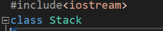
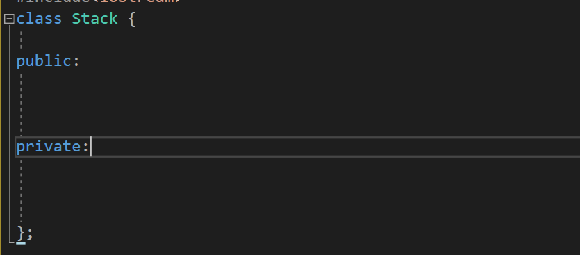

Essencial-cpp阅读笔记3
C++基础编程３
泛型编程风格
STL,就是泛型编程的良好体现,它由两个基本组件组成.1是容器, 2是泛型算法.
从指针运算讲起
我们现在考虑从一个容器里找到一个元素, 比如说在一个vector容器中找到我们想要的整数: int. 算法是轻而易举就可以写出来的:
int* find(const vector<int> &r_vec,int& val){
for(int i = 0 ; i < r_vec.size();i++){
if(vec[i] == value){
return &vec[i];
}
}
return nullptr;// same as NULL in C
} 如果,我们的容器时任何什么东西又该怎么办呢?
template<typename elem>=
elem* find(const vector<elem>& r_vec, elem& val)
{
for(int i = 0 ; i < r_vec.size();i++){
if(vec[i] == value){// 当然要求elem存在 equal 方法或者是重载了 ==
return &vec[i];
}
}
} 但是,貌似若我们不是在vector里找,而是list里找,那又该怎么办呢. 我们没办法对list找下标的(list 是离散容器)
采用纯指针访问
anyway, 我们想一下啊: 本质上[]就是一个语法糖,对于一个连续容器的, 本质上讲:
array[i] <----------> (array+i) 这样就启发我们这样书写当传入类型是array类型的时候(经典数组)
elem* find(elem* begin,int elemSize,elem& befoundElem){
if(begin && elemSize < 0){
return nullptr;
}
for(int i = 0; i < size; i++,begin++){
if(*begin == beFoundElem){
return begin;
}
}
return nullptr;
} 嗯,但是传入要访问多少个,不如试试全部传入指针?
elem* find(elem* begin,elem* end,elem& befoundElem){
if(begin && elemSize < 0){
return nullptr;
}
for(; begin !- end; i++,begin++){
if(*begin == beFoundElem){
return begin;
}
}
return nullptr;
} 现在我们发现,我们无意的抽象出来一个对象, 什么意思?我们抽象出来一个指针类型,使之可以有 ++ — * ->等若干行为,我们的容器只需要提供begin 和 end就可以使用最广泛的泛型算法!这就是 iterator迭代器的来源!
泛型指针:迭代器
vector<string> :: iterator IT = svec.begin() 就是一个指针指向了begin!如果我们希望是一个常指针帮助我们做事情,那使用const_iterator会好很多!
为了可以让iterator正常工作,有必要指出与实现:
1 -> equlity( == ) and inequlity ( != )
2 -> assignment(= 赋值)
3. empty(空)
4. size(衡量元素大小)
5.clear()删除初始化一个容器的基本五大接口
- 初始化默认的空容器
- 产生特定的容器,并且所有的成员都要有默认的初始值
- 产生特定大小的容器,并为之赋初始值
- 通过iterator给与值
- 复制构造
基于对象的编程风格
我们在先前已经体验过class了，就像vector一样。
首先，我们知道：类必须要声明！
#include<string>
string pooh[4] ={
"winnie",
"robin",
"eeyole",
"piglet"
}; class 名称将会被视作类型（type）名称，就像内置类型int, double一样。 class object的初始化做法有很多种！
#include<vector>
string path("dummy");
vector<string> svc1(4);
vector<string> svc2(4,"dummy");
vector<string> svc3(pooh,pooh+4); 每个class都会提供一组操作数，让我们可以作用之在object.比如说，我们提供函数func(),
class sth;
sth Sth;
Sth.func(obj object) 一般的, class有三个部分组成，我更愿意说：class里的成员是分为三个类别的：private的，protected的，和 public 的。Public区域下的成员和对象都是对外开放。Private则只能在类内访问！举个例子：
class aClass
{
public:
int pub_Val; // can be used in public space
int* returnAIntVal();{
return new int(10); // can be used in public space
}
int returnPri_Val(){
return pri_Val; // valid
};
private:
int pri_Val;
int* returnSomethong();{
return new int(11);
}
}
int main(){
aClass sth;
int a = sth.pub_Val; // valid
int* pa = sth.returnPri_Val();// valid
int priAVal = sth.rereturnPri_Val();
// Also valid! This is the Interface of private.
// followings are invalid
int wrongA = sth.pri_Val; // Invalid!!! cannot visit private
int* wrongB = sth.returnSomethong();// Invalid!!! cannot visit private
}
实现一个Class
我们的main topic 在使用C++手写一个stack！关键在于怎么写

这是一个声明！

这是一个Stack的标准声明与定义。
下面，编写接口：
#include<iostream>
#include<string>
#include<vector>
using namespace std;
class Stack
{
public:
bool push(const string& pString);
bool pop(string& pString);
bool peek(string& pString);
bool isEmpty();
bool isFull();
int size() { return _stack.size(); };
private:
vector<string> _stack;
};
void fill_stack(Stack& stack, istream& is = cin) {
string str;
while (is >> str && !stack.isFull()) {
stack.push(str);
}
cout << "Read in" << stack.size() << "elements\n";
}
但是接口没有实现！那怎么办！
我们是这样书写类内的成员函数的：只需要声明这是哪个类的函数。。。
bool Stack::pop(string& elem) {
if (empty()) {
return false;
}
elem = _stack.back();
_stack.pop_back();
return true;
}
inline bool Stack::empty() {
return this->_stack.empty();
} 类和其成员函数的定义和实现是，应当放在头文件里去。
构造函数和析构函数
我们先不说的这样抽象！转向直接阐述：构造函数是一种初始化函数，同
int a = new int; 是一回事。但是由于我们的类是若干基础变量组合产生。有必要使用函数来包装！比如说：
class Tri{
private:
m_Val1;
m_Val2;
}Tri::Tri(){
m_Val1 = 10;
m_Val2 = 20;
} 上面的函数就是一个构造函数，我们初始化了类内的变量！
构造函数是可以重载的！我们可以重载构造函数，使之给用户提供不同的初始化方式。
Tri::Tri(int mVal1, int mVal2){
m_Val1 = mVal1;
m_Val2 = mVal2;
}初始化列表
我们对于一些变量可以使之直接在表内初始化
Tri::Tri(int mVal1, int mVal2): m_Val1(mVal1),m_Val2(mVal2){
// ... other things
} 我们会在程序的结尾调用析构器。事实上，在上面的函数中没有必须调用析构器！因为对象都是简单对象，直接释放即可。这就说明一件事情：对于简单的类和简单的尚未在堆上开辟内存的类，可以直接调用析构器从而实现内存释放
逐一初始化的
下面想要说的是浅拷贝的知识点：这是在我们使用等号赋值的一种较为常见的错误
对于一些简单的类，那些成员不在堆上的类，我们当然可以选择浅拷贝来解决问题：
class Easy{
public:
anSample(int val1, int val2);
int m_Val1;
int m_Val2;
//...
} 这样的行为被称为浅拷贝：
Easy anSample(1, 2);// call the anSample(int,int)
Easy aCopy = anSample; 本质上，我们实际上调用了这样一个被编译器隐藏起来的函数：
Easy& operator=(Easy& beCopied){
this->m_Val1 = beCopied->m_Val1;
this->m_Val2 = beCopied->m_Val2;
} 那也就意味着，假使我们这样操作：
class Diff{
public:
diff(int val){
this->m_Val1 = val;
this->m_inHeapArray = new int[10];
}
int m_Val1;
int* m_inHeapArray;
} 而这样的话，就意味着我们在赋值的时候
Diff dif(10);
Diff copy = dif; 调用的是：
Easy& operator=(Easy& beCopied){
this->m_Val1 = beCopied->m_Val1;
this->m_inHeapArray = beCopied->m_inHeapArray;
} 这分明是开了两个指针指向同一块内存，这就意味着，只需要我们的被拷贝对象或者是拷贝对象被调用了正确的（就是说我们的程序员正确的释放了内存）析构函数，那么，当程序结束或者是准备析构另一个对象的时候，我们就会拿起来它，释放（危险行为），但是先前这块地方已经被释放过了！坏了，这下寄了，程序就会崩溃！
解决办法是：自己老老实实重写，比如说：
Diff& operator=(Diff& beCopied){
this->m_Val1 = beCopied->m_Val1;
this->m_inHeapArray = new int[10];
memcpy(this->m_inHeapArray,beCopied->m_inHeapArray,10*sizeof(int));
return *this;
}TIPS：小心坑
由于引用的出现，我们赋值方式很多，但是这样的等号赋值，编译器调用哪一个呢？
Diff copy = sample; // 调用了默认的还是自己重载的？
//
Diff copy2;
copy2 = sample; // sample is already inited 答案是，上面的调用的是默认的拷贝构造函数（构！造！），下面调用的是自己手动重载的函数。这是等号赋值函数。这是我们需要注意的！！！
下面供一个小小的DEMO给大伙看看：
#include<iostream>
#include<cstdlib>
class Diff {
public:
Diff();
Diff(int val);
~Diff();
Diff& operator=(Diff& dif);
void showDetail()const;
private:
int m_Val;
int* m_inHeap;
};
Diff::Diff() {
this->m_Val = 0;
this->m_inHeap = NULL;
}
Diff::Diff(int val) {
this->m_Val = val;
this->m_inHeap = new int[10];
}
Diff::~Diff() {
delete[] this->m_inHeap;
std::cout << "Finished calling the destructor!" << '\n';
}
Diff& Diff::operator=(Diff& dif) {
this->m_Val = dif.m_Val;
this->m_inHeap = new int[10];
memcpy(this->m_inHeap, dif.m_inHeap, 10 * sizeof(int));
return *this;
}
void Diff::showDetail()const {
std::cout << "the Val >" << this->m_Val << " " \
<< " the addr name :>" << this->m_inHeap << " " << std::endl;
}
int main() {
Diff sample(10);
Diff copy;
copy = sample;
copy.showDetail();
sample.showDetail();
}mutable 和 const
查阅你的英文字典，哈哈一笑，一个是可变的，一个不是可变。
我们来看一个Demo函数：
#include<iostream>
class wrapArray {
public:
wrapArray();
wrapArray(size_t size);
inline size_t getSize() const { return this->arrSize; };
inline int* getAddr(int* emptySpace = nullptr)const { int* space = new int[arrSize]; memcpy(space, this->arr, sizeof(int) * arrSize); return space; };
void simpleInitArr();
long addSum()const;
private:
int* arr;
size_t arrSize;
};
wrapArray::wrapArray() {
this->arrSize = 0;
this->arr = nullptr;
}
wrapArray::wrapArray(size_t size) {
this->arrSize = size;
this->arr = new int[size];
}
void wrapArray::simpleInitArr() {
for (int i = 0; i < this->arrSize; i++) {
this->arr[i] = i;
}
return;
}
long wrapArray::addSum()const {
long sum = 0;
int* arr = getAddr();
for (auto i = 0; i < getSize(); i++) {
sum += arr[i];
}
return sum;
} 类的成员函数后面加 const，表明这个函数不会对这个类对象的 数据成员（准确地说是非静态数据成员）作任何改变 。 在设计类的时候，一个原则就是对于不改变数据成员的成员函数都要在后面加 const，而对于改变数据成员的成员函数不能加 const。
可以看到上面的函数就是这样做的！
但是注意到！一些函数虽然是 const 的，向编译器承诺不会改变成员的值的。但是他们有可能返回一个 non-const接口，对于那些拿起这些接口的对象，他们是可以改变对象的值的！这是十分不好的！最好的办法是设计一个non-const类型从而分别处理比较好
那mutable呢？他们用在这样希望其他不变而就这个改变的变量上，比如说：
#include <iostream>
class Person {
public:
Person();
~Person();
int getAge() const; /*调用方法*/
int getCallingTimes() const; /*获取上面的getAge()方法被调用了多少次*/
private:
int age;
char* name;
float score;
mutable int m_nums; /*用于统计次数*/
};
Person::Person()
{
m_nums = 0;
}
Person::~Person() {}
int Person::getAge() const
{
std::cout << "Calling the method" << std::endl;
m_nums++; // 你看这个就突破了const 的修饰
//age = 4; 仍然无法修改该成员变量
return age;
}
int Person::getCallingTimes()const
{
return m_nums;
}
int main()
{
Person* person = new Person();
for (int i = 0; i < 10; i++) {
person->getAge();
}
std::cout << "getAge()方法被调用了" << person->getCallingTimes() << "次" << std::endl;
delete person;
getchar();
return 0;
}this指针
什么是this指针？其实，它就相当于一个self!也就是说指向他自己的一个指针！
by the way, 针对拷贝构造函数的时候注意一定要查看这两个对象是不是一致的。这是一个好习惯。
静态类成员与函数
什么是静态类的呢?我们回想一下静态类变量：
static int times = 2; 一回事情！而且，static变量可以定义在类的外面：
class isSomeThing{
//...
inline static getAStaticVal(){return aStaticVal;}
}
int isSomeThing:: aStaticVal = 10; 值得注意的是：静态成员函数是只可以访问静态变量成员的，为什么呢？
在类中，static 除了可以声明静态成员变量，还可以声明静态成员函数。普通成员函数可以访问所有成员（包括成员变量和成员函数），静态成员函数只能访问静态成员。
编译器在编译一个普通成员函数时，会隐式地增加一个形参 this，并把当前对象的地址赋值给 this，所以普通成员函数只能在创建对象后通过对象来调用，因为它需要当前对象的地址。而静态成员函数可以通过类来直接调用，编译器不会为它增加形参 this，它不需要当前对象的地址，所以不管有没有创建对象，都可以调用静态成员函数。
普通成员变量占用对象的内存，静态成员函数没有 this 指针，不知道指向哪个对象，无法访问对象的成员变量，也就是说静态成员函数不能访问普通成员变量，只能访问静态成员变量。
普通成员函数必须通过对象才能调用，而静态成员函数没有 this 指针，无法在函数体内部访问某个对象，所以不能调用普通成员函数，只能调用静态成员函数。
静态成员函数与普通成员函数的根本区别在于：普通成员函数有 this 指针，可以访问类中的任意成员；而静态成员函数没有 this 指针，只能访问静态成员（包括静态成员变量和静态成员函数）。